Kobo
Sync books from your Trove library to your Kobo eReader. Books are managed through a dedicated Kobo shelf. Adding or removing books from this shelf controls what syncs to your device.
What You'll Achieve
With Kobo integration, you can:
- Access your entire Trove library on your Kobo eReader
- Sync books automatically between Trove and your device
Key Features & Capabilities
Smart Shelf Management
- Dedicated Kobo Shelf: Each user gets a special Kobo shelf that automatically syncs with their device
- Two-Way Synchronization: Add/remove books in Trove or on your Kobo - changes sync both ways
- Instant Updates: Book changes reflect immediately after syncing
Shelf Sync to Kobo Collections
Your shelves and magic shelves are automatically synced to your Kobo as collections, helping you organize your reading on the device.
- Automatic Sync: Each shelf in Trove appears as a collection on your Kobo
- Magic Shelves Included: Dynamic magic shelves are synced the same way
Device Integration
- Seamless Setup: One-time configuration connects your Kobo to Trove
- Proxy Support: Access both your Trove library and Kobo Store purchases
- Multiple Users: Each user has their own independent Kobo integration
File Support
- EPUB books sync as they are, or converted to KEPUB (Kobo's own flavour, with better typography and reading statistics) if an admin turns on Convert to KEPUB.
- Comics (CBZ, CBR, CB7) sync when an admin turns on Convert CBX to EPUB.
- PDFs and audiobooks don't sync to a Kobo.
Nginx Reverse Proxy Configuration
If you use nginx as a reverse proxy, add these settings for Kobo sync to work properly:
proxy_set_header Host $host;
proxy_set_header X-Real-IP $remote_addr;
proxy_set_header X-Forwarded-For $proxy_add_x_forwarded_for;
proxy_set_header X-Forwarded-Host $host;
proxy_set_header X-Forwarded-Proto $scheme;
proxy_set_header X-Forwarded-Port $server_port;
proxy_buffer_size 128k;
proxy_buffers 4 256k;
proxy_busy_buffers_size 256k;
large_client_header_buffers 8 32k;Step 1: Switch on Kobo sync
- Go to Settings › Devices and find Kobo Integration Configuration
- Switch on Enable Kobo Sync. Trove creates your Kobo Sync Token
- Copy the token with the copy button (the eye button shows it)
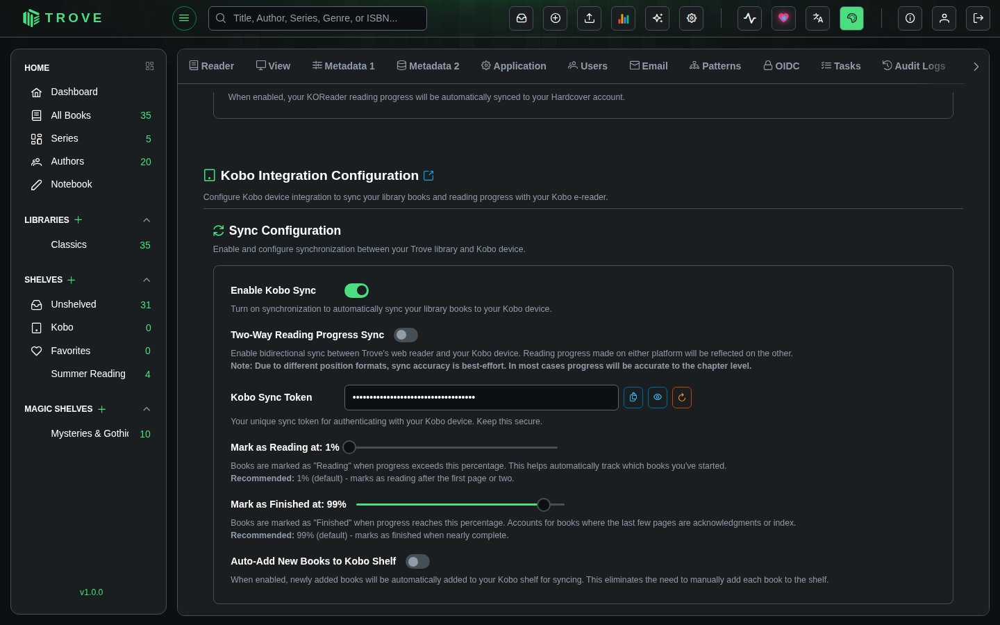
The same section has your personal options:
| Setting | What it does |
|---|---|
| Two-Way Reading Progress Sync | Also sends your place in Trove's own reader to the Kobo, not just the Kobo's to Trove |
| Mark as Reading at | Progress at which a book counts as started (1% by default) |
| Mark as Finished at | Progress at which a book counts as read (99% by default, allowing for notes and index pages) |
| Auto-Add New Books to Kobo Shelf | Puts every newly added book on your Kobo shelf |
Admins also see Administrator Settings for everyone: KEPUB conversion and its size limit, forced hyphenation, and converting comics to EPUB. See Device settings. Regenerate Token makes a new token; the Kobo then needs the new address.
Step 2: Configure Your Kobo
- Connect your Kobo to your computer via USB
- Enable hidden files in your file manager
- Open
.kobo/Kobo/Kobo eReader.confin a text editor
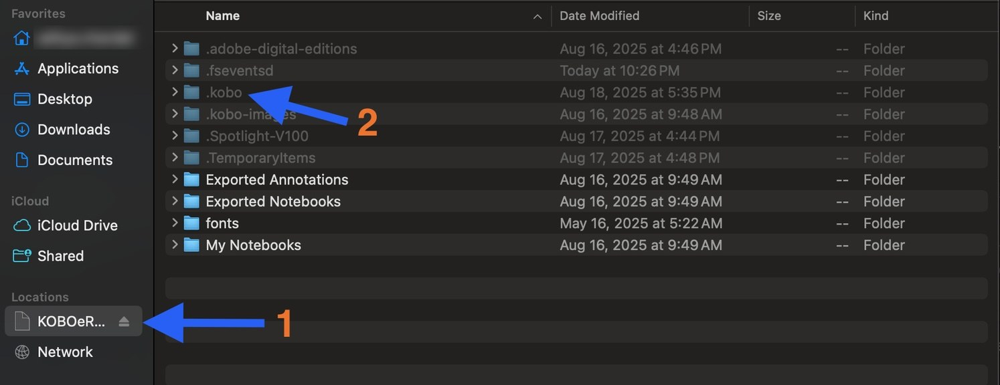
- Find the
[OneStoreServices]section and update theapi_endpointline:
Local network:
api_endpoint=http://192.168.1.100:6060/api/kobo/YOUR-TOKENRemote server (with reverse proxy):
api_endpoint=https://trove.example.com/api/kobo/YOUR-TOKEN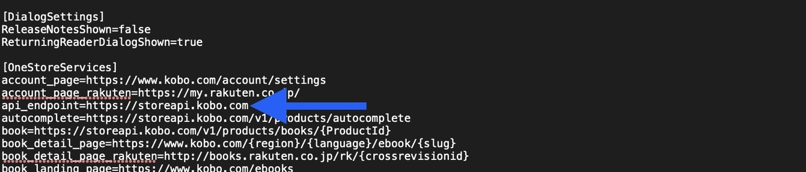
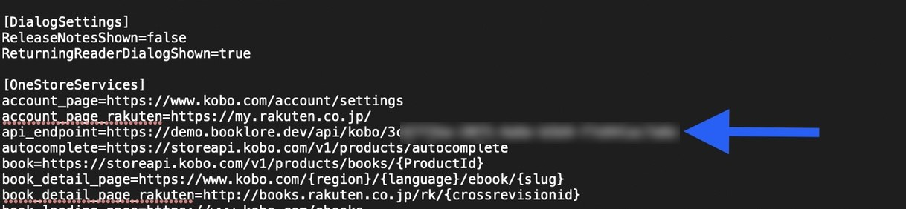
- Save the file and safely eject your Kobo
Step 3: Sync Books
- In Trove, click the three-dot menu on any book card and select Assign Shelf
- Choose your Kobo shelf
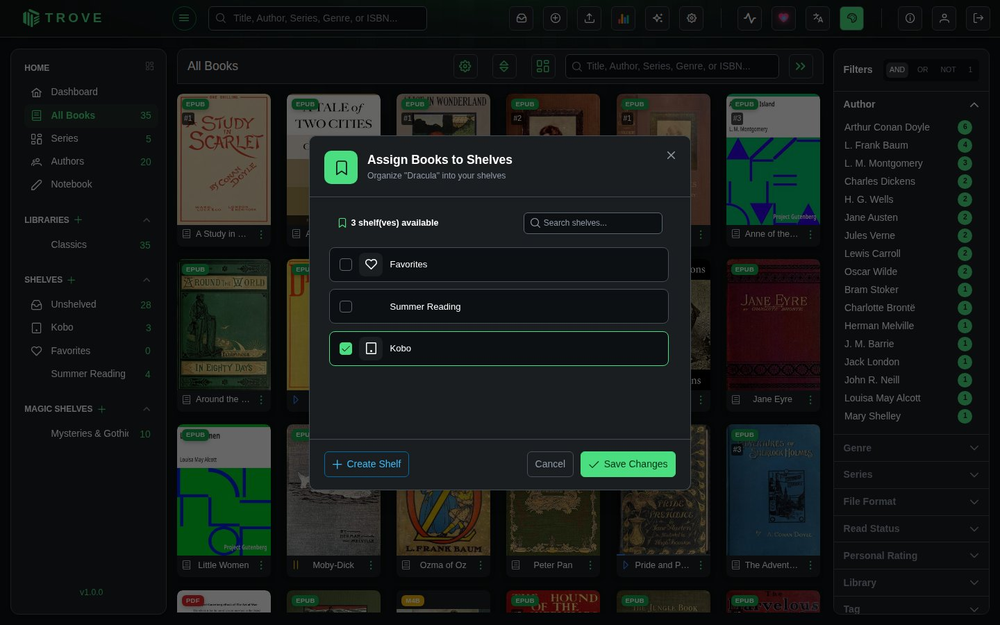
- Repeat for all books you want on your device
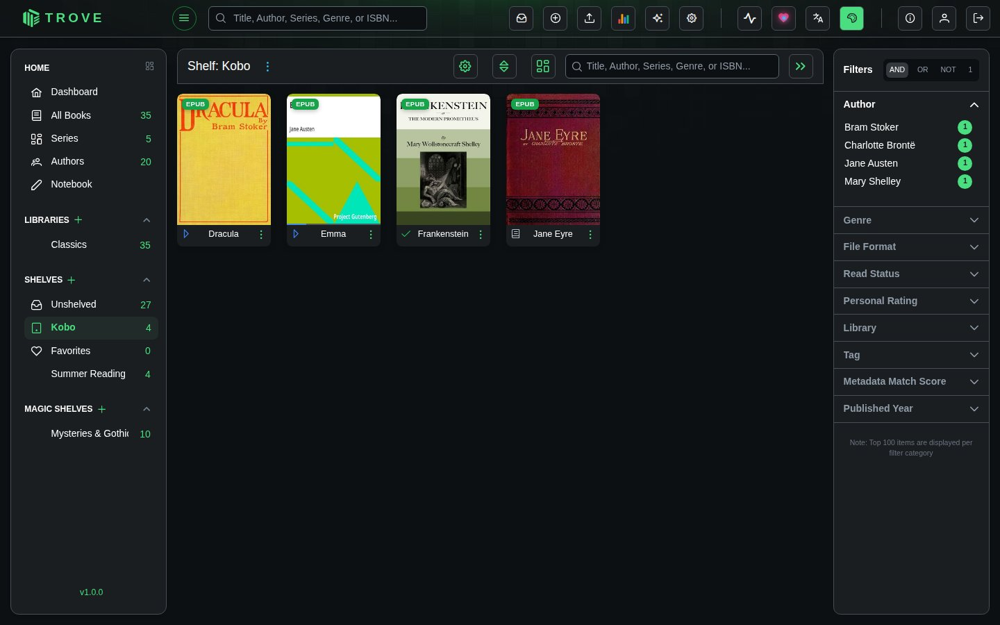
- On your Kobo, go to My Books and tap the sync icon, then Sync Now
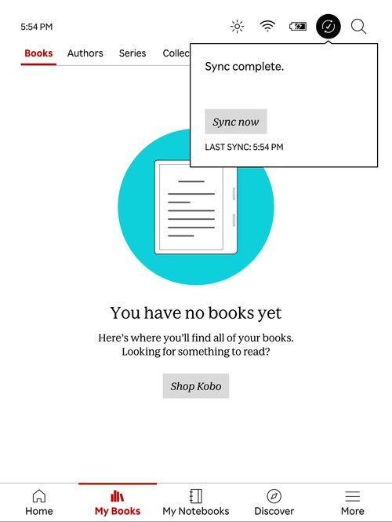
- Your Trove books appear on the device
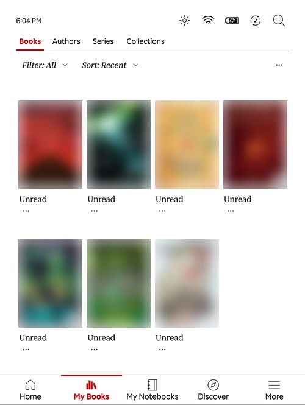
Removing Books
From the Kobo device
- Tap the three dots on the book cover and select Remove
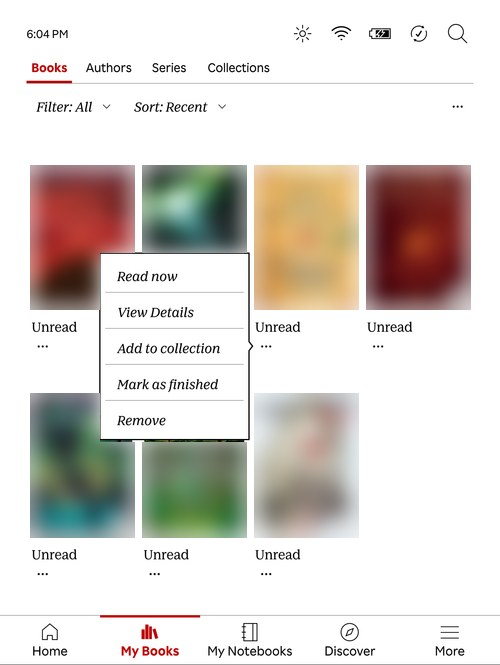
- Select Remove from My Books
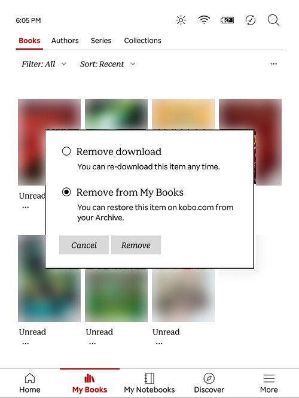
- Tap Sync Now to push the change back to Trove
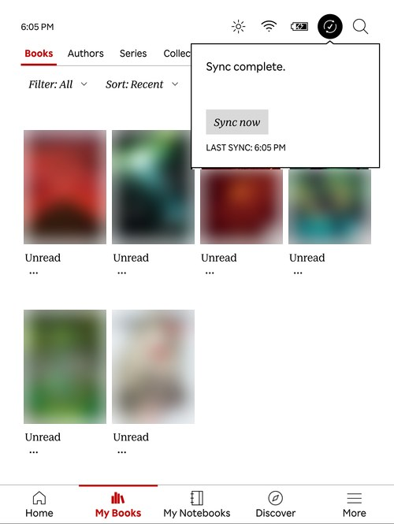
The book is removed from your Kobo shelf in Trove but remains in your main library.
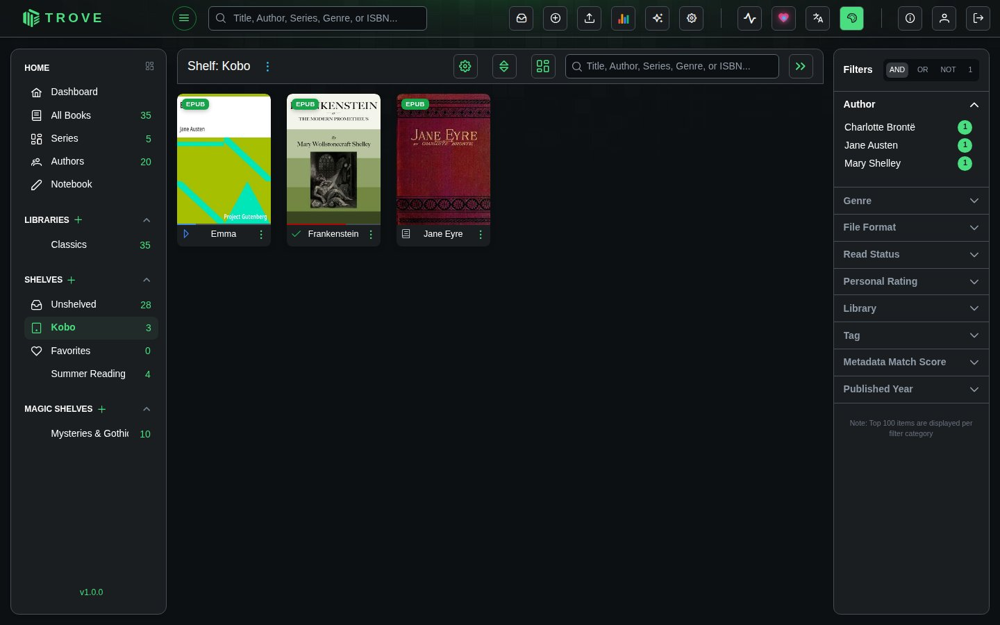
From Trove
- Go to your Kobo shelf
- Click the three-dot menu on the book and select Assign Shelf
- Uncheck the Kobo shelf and save
- Sync your Kobo device to apply the change
Viewing Synced Progress
Reading progress from your Kobo appears on the book's detail page in Trove as Kobo Progress, with an orange badge and a red bar under the cover.
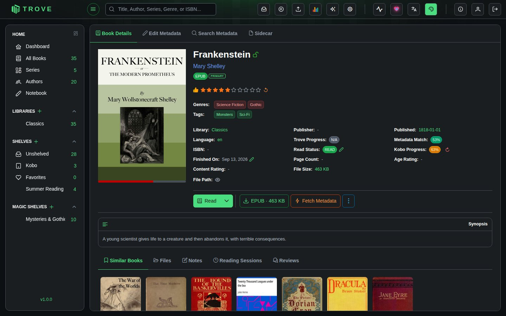
Click the reset arrow beside it to clear the Kobo progress in Trove. This does not affect the device's read status.
Granting Access to Other Users
By default, only admins have Kobo Sync enabled. To grant it to other users:
- Go to Settings > Users
- Click on the user
- Enable the Kobo Sync permission
- Save

The user can then find their own API token in Settings > Devices and follow the setup steps above. Each user gets their own token and Kobo shelf.